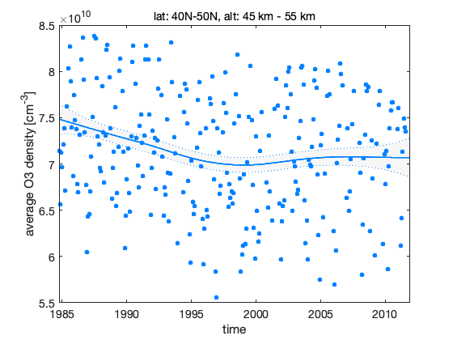
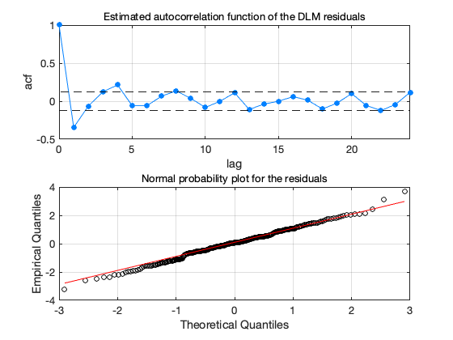
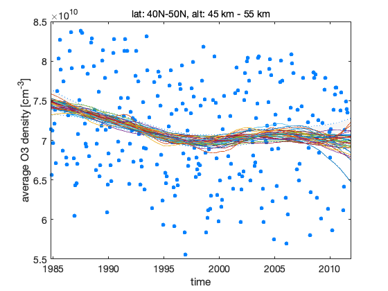
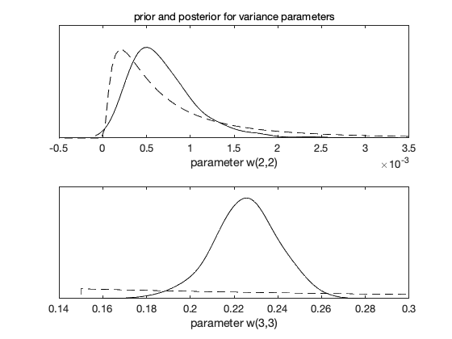
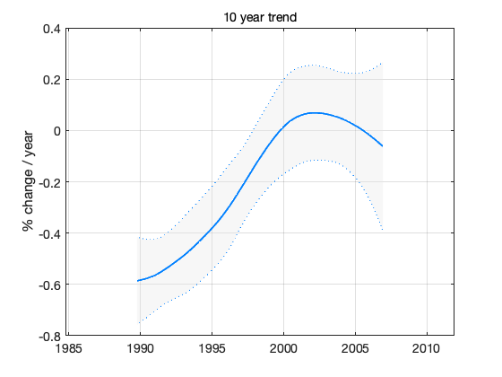

Stratospheric ozone time series trend analysis
This demo reproduces calculation for article: Laine, M., Latva-Pukkila, N., Kyrölä, E., Analyzing time varying trends in stratospheric ozone time series using state space approach, Atmospheric Chemistry and Physics Discussion, 13, pages 20503-20530, 2013. doi:10.5194/acpd-13-20503-2013
First load example data set. Stratospheric ozone observations from two satellite instruments SAGE II and GOMOS. The original satellite observations has been combined and processed to produce averaged zonal data for different altitudes. Here we use monthly avarages between 45 km to 55 km and 40N to 50N for years 1984 to 2012.
load ozonedata.mat % data, label time = data(:,1); % time in years from 1984 to 2012 y = data(:,2); % ozone density [1/cm^3] s = data(:,3); % uncertainty standard deviation for y X = data(:,4:6); % proxies
We scale y for numerical stability.
ys = stdnan(y); yy = y./ys; ss = s./ys;
Prior means for some components of W, the model error matrix.
ym = meannan(yy); % mean observations wtrend = abs(ym)*0.00005; % trend std wseas = abs(ym)*0.015; % seasonal component std w0 = [0 wtrend wseas wseas wseas wseas];
Calculate the DLM smoother solution, do MCMC over some components in the matrix W.
options = struct('trig',2,'mcmc',1,'nsimu',2000,'winds',[0 1 2 2 2 2]); dlm = dlmfit(yy,ss,w0,[],[],X,options);
Sampling these parameters: name start [min,max] N(mu,s^2) w2: -7.48787 [-Inf,Inf] N(-7.48787,1^2) w3: -1.78409 [-Inf,Inf] N(-1.78409,1^2) woptv = 1x0 empty double row vector woptw = 0.00063132 0.22512 woptg = 1x0 empty double row vector
figure(1); dlmplotfit(dlm, time, ys) title(label);xlabel('time');ylabel('average O3 density [cm^{-3}]')
figure(2); dlmplotdiag(dlm, time, ys)
Produce sample from the model states using dlmsmosam. It accounts the posterior uncertainty in W using the MCMC chain in dlm.chain.
nsam = 200; % number of sampled to draw from the posterior
dlm_sample = dlmsmosam(dlm,nsam);
Draw dome sample realizations of the level component over the plot in Figure 2.
figure(1); hold on for i=1:5:nsam plot(time,ys*squeeze(dlm_sample(1,:,i)),'-') end hold off
The next figure shows prior and posterior distributions for standard deviations from the diagonal of model error matrix W.
figure(3); clf mcmcplot(dlm.chain,[],dlm.res,'denspanel',2); subplot(2,1,1);title('prior and posterior for variance parameters');xlabel('parameter w(2,2)') subplot(2,1,2);title('');xlabel('parameter w(3,3)')
Sample trend statistics form DLM sample. We calculate 10 year running trend.
nyear = 10; tsamp = ys*squeeze(dlm_sample(1,:,:)); % sample of levels ysm = mean(tsamp(:)); % their mean ysf = 1/(ysm*nyear)*100; % scale factor to get % change / 10 year t10 = mean((tsamp(nyear*12+1:end,:)-tsamp(1:end-nyear*12,:))')*ysf; % mean trend s10 = std((tsamp(nyear*12+1:end,:)-tsamp(1:end-nyear*12,:))')*ysf; % std in the sample time10 = time(fix(nyear/2)*12+1:end); time10 = time10(1:length(t10)); % time axis for plot
figure(4); clf confband(time10,t10,s10);grid; xlim([time(1),time(end)]); % match axis to other plots title('10 year trend'); ylabel('% change / year')